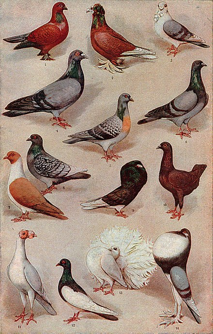
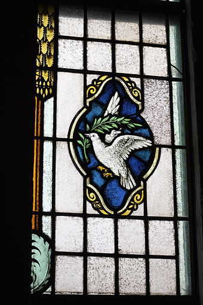
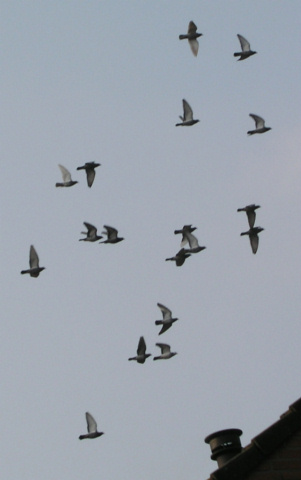

Feathers in the Concrete Jungle: The Remarkable Urban Pigeon
In the bustling metropolises of the world, among the skyscrapers and city streets,
a remarkable species has carved its niche in the urban ecosystem—the pigeon,
known colloquially as the "wall dove." While these birds are often dismissed as mere pests or
overlooked as common urban fauna, the pigeon's role in our cities is far more complex and intriguing
than meets the eye.
Let's uncover the fascinating and symbiotic relationship the wall dove shares with humans in urban settings.
As urbanization continues to reshape the global landscape, cities have become the dominant human habitat.
However, it is not humans alone who have adapted to this concrete jungle; pigeons have thrived,
flourishing amidst the steel, glass, and cement of the cityscape. Often derided for their perceived nuisances,
these resilient birds possess unique qualities and characteristics that have allowed them to not only survive
but to integrate into our urban environments.
Understanding the ecology, behavior, and interactions of pigeons with urban spaces is essential,
as it provides valuable insights into the broader dynamics of urban wildlife and human-animal coexistence.
Natural History of Pigeons in Cities
Pigeons, often referred to as "rock doves" (Columba livia), are descendants of wild rock doves found in coastal regions and cliffs. Their domestication dates back over 5,000 years, making them one of the earliest domesticated birds. Pigeons have been kept by humans for their meat, messenger capabilities, and as pets, contributing to their presence in urban environments.
Behaviors of Pigeons in Cities
Pigeons exhibit unique behaviors in urban settings. They have adapted to city life with remarkable flexibility, relying on human-provided food sources and nesting in buildings. Their navigation and homing abilities have made them prized messengers in history. Pigeon flocks can display complex social structures, with dominant birds taking charge of foraging and security.
Ecological Roles of Pigeons in Cities
While often seen as urban pests, pigeons play ecological roles in cities. Their foraging habits contribute to seed dispersal, aiding in the spread of plants and helping to green urban areas Pigeons also serve as bioindicators of urban environmental health. Their feathers can accumulate pollutants, making them valuable indicators of metal contamination. They have become an integral part of the urban ecosystem, participating in nutrient cycling and ecological processes that often go unnoticed.
Adaptability in Urban Environments
Pigeons have honed their ability to adapt to the challenges of urban living. They have seamlessly integrated into the fast-paced world of cities, where concrete structures, artificial landscapes, and human activities dominate. Their remarkable adaptability is underscored by their ability to exploit human-provided food sources, often scavenging for scraps in parks and plazas, and their ingenious choice of nesting sites, which often involve ledges, rooftops, and even building crevices.
Cultural Significance of Pigeons in Cities
Pigeons have held cultural significance throughout history. They are symbols of peace and freedom, with many cultures and societies associating them with positive attributes. Statues and monuments dedicated to pigeons can be found in cities worldwide. Pigeons have also been central to various forms of entertainment, including pigeon racing. This activity celebrates pigeons' unique flying abilities and strengthens the bond between people and these birds[^7^]. Understanding the natural history, behaviors, ecological roles, and cultural significance of pigeons in cities allows us to appreciate their place in urban ecosystems. Rather than merely considering them as pests, we should recognize the diverse and meaningful ways in which pigeons interact with human and urban environments. This comprehensive understanding is crucial for fostering a harmonious coexistence between pigeons and humans in our cities.
Bonus: Pigeons are quite smart so that they can recognize themselves.
Most birds cannot recognize their own image. Pigeons, however, are able to identify themselves over a picture of a different pigeon. Their recognition skills don’t end there, though- they are also able to differentiate between photos of different humans.
Even more, pigeons can detect cancer.
Many people don’t know just how smart pigeons are. They can be trained to recognize words and to match art with its artist, but what is perhaps most impactful is that they can even be taught to differentiate between benign and malignant growths. Researchers at the University of California Davis trained pigeons to identify which biopsies were benign and which were malignant. Once they were taught how to distinguish between the two, the pigeons were able to use their newfound knowledge to “diagnose” brand new biopsies that they had never seen before. On average, a pigeon by itself had an 85% accuracy. In a group, their accuracy reached 99%, which is what is expected from a doctor.
Other thing you might don't know about pigeons is maybe that they produce milk! Of course, they don’t produce actual milk- only mammals can do that.
However, it is essentially the same as milk in that it is a white liquid containing all the necessary antioxidants, fats, nutrients, and proteins a baby bird needs. Another similarity it shares with mammal milk is that its production is regulated by the hormone prolactin. Both male and female adult pigeons produce this milk in their crop. The crop is a little section in a bird’s esophagus meant for storing food and, in this case, producing crop milk. Pigeons are part of a small group of birds that produce crop milk, only joined on the list by doves, flamingoes, and male emperor penguins.

The "wall dove" is a colloquial term for pigeons, emphasizing their close association with urban walls and structures.
The cultural and ecological significance of pigeons is often overlooked, and this report aims to shed light on their multifaceted role in urban environments.
 Doves are often associated with the concept of peace and pacifism. They often appear in political cartoons, on banners and signs at events promoting peace (such as the Olympic Games, at various anti-war/anti-violence protests, etc.), and in pacifist literature. A person who is a pacifist is sometimes referred to as a dove (similarly, in American politics, a person who advocates the use of military resources as opposed to diplomacy can be referred to as a hawk).  Pigeon is a domesticable bird. Pigeon racing is the sport of releasing specially trained homing pigeons, which then return to their homes over a carefully measured distance. The time it takes the animal to cover the specified distance is measured and the bird's rate of travel is calculated and compared with all of the other pigeons in the race to determine which animal returned at the highest speed.
Believe it or not, pigeons can find their way home from an astounding 1,300 miles away! What’s more, they have proven that they can do so after being transported in complete isolation to a location they’ve never been. The cages were even rotated during transportation to prevent the birds from knowing which direction they were traveling in. Scientists do not fully know how pigeons manage to find their way back when they have no visual, olfactory, or magnetic clues to aid them in knowing their location. However, they now believe that pigeons actually have compass and map mechanisms that help them navigate. While the map mechanism remains a mystery, it is likely that the compass mechanism relies on the sun’s position.
Shapiro, L. (2013). The Secret Life of Pigeons: Bird Brains Are More Limber and Layered Than You Think. Scientific American.
Wylie, C. D. (2004). The History of Carrier Pigeons. The Journal of the Society of Archer-Antiquaries, 47, 11-20.
Guilford, T., & Biro, D. (2014). How Do Groups of Animals With Leaders Make Decisions? Journal of Experimental Biology, 217(5), 689-692.
Marzluff, J. M., & Neatherlin, E. (2006). Corvid Response to Human Settlement and Campgrounds: Causes, Consequences, and Challenges for Conservation. Studies in Avian Biology, 31, 269-279.
Delgado, M. M., et al. (2011). Pigeon Feathers as Bioindicators of Metal Contamination in Urban Areas. Environmental Pollution, 159(2), 554-561.
Smith, L. D. (2011). The Pigeon and the City: Symbols of Change in Modern America. Wildlife Society Bulletin, 35(4), 402-408.
Blechman, A. D. (2007). The Secret World of Pigeon Racing. Berkley.